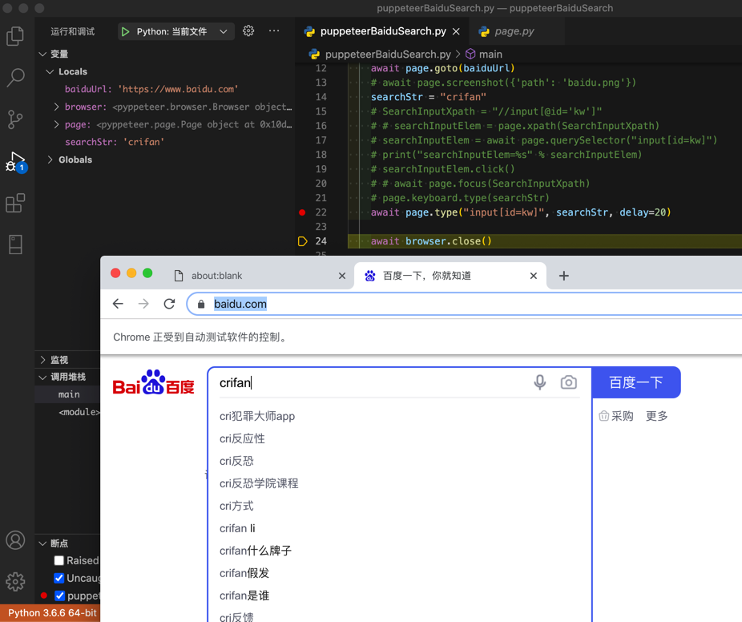

输入文字
对于页面元素：
<input id="kw" name="wd" class="s_ipt" value="" maxlength="255" autocomplete="off">
想要输入文字
不支持定位元素再输入
此处，无需，也没法实现：先定位元素，再输入
而是，只支持：直接定位并输入
多种实现方式
方式1：先Selector定位，再type输入
定位此处只适合用：Selector，具体写法是：
"input[id='kw']"
然后输入是用type函数
完整代码：
searchStr = "crifan"
SearchInputSelector = "input[id='kw']"
await page.type(SearchInputSelector, searchStr, delay=20)
方式2：先focus，再keyboard的type
先（通过selector）focus，再（用keyboard）type
完整代码：
searchStr = "crifan"
SearchInputSelector = "input[id='kw']"
await page.focus(SearchInputSelector)
await page.keyboard.type(searchStr)
方式3：先focus，再click，最后用keyboard的type
先selector，再click（类似于focus），最后用keyboard输入type
完整代码：
searchStr = "crifan"
SearchInputSelector = "input[id='kw']"
searchInputElem = await page.querySelector(SearchInputSelector)
await searchInputElem.click()
await page.keyboard.type(searchStr)
效果
百度首页的输入框中，输入了字符串crifan后的效果：

注意事项
加记得加await
注意：一定要加await，否则：代码运行无效果。
且还会报警告：
/Users/crifan/dev/dev_root/python/puppeteerBaiduSearch/puppeteerBaiduSearch.py:18: RuntimeWarning: coroutine 'ElementHandle.click' was never awaited
searchInputElem.click()
相关文档
- coroutine type(selector: str, text: str, options: dict = None, **kwargs) → None[source] API Reference — Pyppeteer 0.0.25 documentation